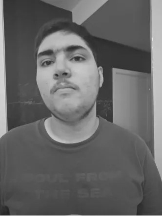
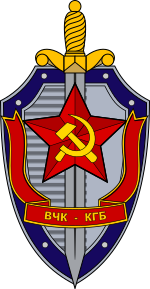

João Augusto "JAOA" Nunes Raimundo é um homem de dezenove anos, que mede aproximadamente 1,90m de altura, e encontra-se atualmente desempregado, porém cursando logística em uma universidade privada desconhecida. JAOA é um criminoso de altíssima periculosidade, cujos principais crimes consistem em:
A última localização registrada de JAOA foi o porão da casa de sua mãe, onde ele foi encontrado jogando um jogo da franquia Kirby. JAOA desde então se encontra foragido.

As recompensas para JAOA vivo consistem em 400mL de caldo de cana e um pastel de carne, enquanto as recompensas para JAOA morto consistem somente em 400mL de caldo de cana.
Caso tenha quaisquer informações sobre o paradeiro de JAOA, favor entrar em contato por meio do WhatsApp nos seguintes números de telefone:
